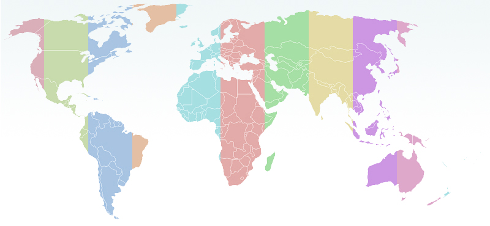

Centers & Programs
Area & Thematic Studies Centers
African Studies, Center for
Arms Control, Disarmament and International Security, Program in
East Asian and Pacific Studies, Center for
European Union Center
Global Studies, Center for
International Business Education and Research, Center for
International Forum on U.S. Studies
Latin American and Caribbean Studies, Center for
Lemann Institute for Brazilian Studies
Russian, East European and Eurasian Center
South Asian and Middle Eastern Studies, Center for
Women and Gender in Global Perspectives
International Programs
China Executive Leadership Program
International Programs, College of Agricultural, Consumer and Environmental Sciences
International Programs in Engineering
LAS Latitudes: International Research, Education, and Outreach through Liberal Arts and Sciences
Mortenson Center For International Library Programs
Program in International and Comparative Law
Translation Studies, School of Literature, Culture and Linguistics, Center for
World Music, Center for
Language Units
Division of English as an International Language
East Asian Languages and Cultures
French Department
Germanic Languages and Literatures, Department of
Linguistics, Department of
Slavic Languages and Literature, Department of
Spanish, Italian and Portuguese, Department of
International Centers Administrative Services
About ICAS
International Centers Administrative Services (ICAS) started as a joint venture between the College of Liberal Arts and Sciences and International Programs and Studies (IPS), to provide grant and administrative services for the U.S. Department of Education Title VI National Resource Centers housed under these units. ICAS currently provides administrative support for many of the IPS units.
Units Supported
International Centers Admin Services
- Associate Provost International Affairs
- Center for African Studies
- Center for Global Studies
- Center for Latin American Caribbean Studies
- Center for South Asian Middle Eastern Studies
- European Union Center
- Russian, East European, and Eurasian Center
Partial Support
- ACDIS
- CELP
- EAPS
- IECP
- IFIC
- IFUSS
- ISSS
- Study Abroad
- WGGP
POLICIES, PROCEDURES, AND FORMS
Paying a foreign national?
Paying a guest speaker an honorarium?
Joint Center event form
CONTACT US
Amy Leng, Assoc. Director of Finance, (217) 333-2357
Brandy Coy, Business Manager, (217) 333-1504
Linda Franklin, Staff Clerk, (217) 244-3208
FREQUENTLY USED SITES
OBFS Website
Banner
P Card
Central Stores
OBFS Policy & Procedure Manual
Campus Admin Manual (Alcohol Procedures)
International Partnerships
International partnerships at the University of Illinois at Urbana-Champaign include a wide range of activities carried out at various levels of our organizational structure. They include collaborative activities with other universities and institutions of higher education, governmental agencies, non-governmental organizations, and private sector corporations. Typically, such collaborations arise from individual faculty members interacting informally with their colleagues abroad, whether it be in connection with shared research interests or common educational goals for their students. Truly dynamic and sustained international partnerships almost always originate with one or two enthusiastic and far-sighted faculty from each partner institution, who are committed to championing the collaboration among their colleagues and students.
It is often advantageous, and sometimes necessary, to formalize such collaborative links with foreign partners at the institutional level by recognizing these links in officially sanctioned written documents. On the Urbana-Champaign campus, oversight of all such formal documentation (broadly termed “international agreements”) of institutional linkages with foreign partners, on behalf of the Board of Trustees, is provided by the Director of Illinois Strategic International Partnerships (ISIP), in the executive offfice of International Programs and Studies.
- developing new institutional linkages, by consulting with faculty and administrators to draft and negotiate international agreements
- maintaining and broadening existing linkages, by identifying key strategic partnerships and disseminating information about opportunities to expand and deepen these partnerships
- ensuring compliance with laws, regulations, and policies as established by the Board of Trustees and the State of Illinois, by working with the Office of University Counsel and the Office of Sponsored Programs and Research Administration to develop uniform guidelines and up-to-date legal language as a basis for international agreements
- providing an institutional record of past and present institutional linkages, by maintaining a database of current international partners, as well as a physical and electronic archive of documents that support formal institutional linkages
Contact:
507 E. Green Street, Suite 401 (MC-417)
Champaign, IL 61820
USA
Phone: (217) 333-1990
Fax: (217) 265-0810
email: tebarnes@illinois
ILLINOIS STRATEGIC INTERNATIONAL PARTNERSHIPS (ISIP)
Illinois Strategic International Partnerships (ISIP) coordinates relationships with a small, select group of true peer institutions around the world that are both broadly and deeply impactful—crossing departments, colleges, centers and institutes to inform and enhance our core missions of research, education, public service, and economic development.
ISIP Vision statement
We will advance the global standing of the University of Illinois as a preeminent public research university, by creating a truly “transnational” institution, where innovative knowledge, research, education, faculty, and students move freely across borders—whether geopolitical, cultural, disciplinary, or academic.
ISIP Strategy
We will leverage existing relationships when possible—and cultivate new relationships when necessary—with a small, highly select group of true peer institutions around the world to form institutional partnerships that are both broadly and deeply impactful—crossing departments, colleges, centers and institutes to inform and enhance all of our core mission activities: research, education, public service, and economic development.
ISIP benefits to primary stakeholders
- enhanced integration of international education experiences into core curricula at Illinois
- enhanced participation by students in disciplines traditionally under-represented in study abroad (particularly in STEM disciplines where semester- or year-based study abroad often means additional time to degree)
- increased co-development of new courses, curricula and, eventually, dual and joint degrees
- enhanced opportunities for student cohorts from Illinois and ISIP partners to come together for research, learning, national and international competitions, or topical summer institutes
- increased access to significant external funding sources, both public and private, for collaborative research and education activities (e.g., European Commission Framework and Erasmus Mundus funding)
- enhanced potential to form truly productive multilateral consortia of university partners, building on strong existing relationships and identified synergies
- enhanced ability to conduct innovative, cross-, multi-, and interdisciplinary research on “big science” questions and problems, by leveraging complementary faculty expertise and research infrastructures
- increased opportunities to foster technological, commercial, and political connections for State of Illinois business and governmental interests with key foreign areas (ex. planned public housing authority informational visit to Stockholm; exchange of expertise on freight and passenger rail capacity and technology)
- increased opportunities for forging beneficial relations with multi-national corporations
ISIP Approach
The central campus administration, through its senior international officer, will work with faculty and a variety of campus constituents to gather information about our existing partnerships, with the goal of identifying those with the greatest potential to be leveraged into broader strategic engagements. Once identified, modest financial support, as well as focused administrative support and oversight, will be provided as seed funding to broaden the scope of collaborative activities undertaken in the partnership. ISIP will rely on pre-defined, clearly articulated criteria and mechanisms for identifying, cultivating, evaluating, and sustaining strategic international partnerships:
The Pilot Project: Inspire
The pilot project of the ISIP initiative is well underway. TheIllinois-Sweden Program for Educational and Research Exchange (INSPIRE), through the leadership of faculty liaisons Anna Stenport (Germanic Languages and Literatures, Scandinavian Studies) and Harry Dankowicz (Mechanical Sciences and Engineering) in cooperation with the Director of ISIP, is an ambitious project to form broad and deep engagements with the three leading institutions of higher education in Stockholm, Sweden: KTH Royal Institute of Technology, Stockholm University, and the Karolinska Institutet. The foundational relationship with KTH is already well-established, with faculty from our Colleges of Engineering, Liberal Arts and Sciences, Fine and Applied Arts, and Media all working directly on collaborative research and education projects with counterparts at KTH. For additional details, please explore the INSPIRE website.
The Africa Initiative
ISIP’s Africa Initiative seeks to identify clusters of research and educational activities, and facilitate expansion of these engagements, with the particular goal of developing deep, sustained partnerships with institutions of higher education in Africa. Ideally, such partnerships will provide enhanced and expanded opportunities for our faculty and students to engage in innovative research and educational experiences, as well as continue our tradition of capacity building and public service across the continent. Desired outcomes of the ISIP Africa Initiative include an increased awareness of the breadth and depth of expertise related to Africa across our campus; enhanced efforts to recruit, enroll, and support African students at Illinois; increased engagement Illinois students in experiential learning abroad and service activities in Africa; an enlarged and strengthened ability to deliver courses and curricula focused on African languages, cultures, histories, and current affairs; expanded access to external funding for research and engagement projects in Africa; and an enhanced ability to bring to bear our strong tradition of cross- and interdisciplinary approaches to complex socio-political, economic, and environmental challenges unique to contemporary Africa.
The Illinois Strategic International Partnerships (ISIP) Africa Initiative seeks proposals from faculty at the University of Illinois at Urbana-Champaign for partnership building projects in, or with a primary focus on, Africa. This grant competition supports activities that identify, implement, and expand upon academic collaborations that will advance and enhance the goals of the ISIP Africa Initiative. Grants of up to $5000 per project will be awarded to cover allowable expenses, including travel and lodging, expenses associated with hosting visiting faculty, researchers, or students from the partner institutions, joint symposia or workshops, public outreach events, use of distance learning technologies, or other appropriate expenses.
Additional information can be found in the RFP and application.
Deadline For Applications: MAY 1, 2012INTERNATIONAL AGREEMENTS
General Agreement Guidelines
Agreements between the University of Illinois at Urbana-Champaign and foreign partner institutions can range from informal (undocumented) “handshake” agreements between faculty to work together in areas of common interest, to formal (documented), legally binding contracts that obligate one or both partners to perform specific actions or provide specific services to the other. Any Illinois campus unit or faculty member may initiate an international agreement; however, we strongly encourage consultation with the Office of Illinois Strategic International Partnerships (ISIP) prior to any preliminary discussions to develop a draft agreement with an overseas institution. For agreements proposing to establish student exchange or fee-base study abroad programs, a consultation with the Study Abroad Office is also required. ISIP will evaluate the parameters of the proposed program to determine what, if any, additional review and oversight of the draft should be requested.
- The general quality and resources, and academic standing of the potential partner
- The potential for institutional support within UIUC for the exchange program
- The potential interest among UIUC students (for proposed student exchange agreements)
- The campus-wide advantage of the proposed exchange
- The overall value of the linkage with regard to the university’s strategic initiatives for international activity
Establishing a New Agreement
- The general scope of the proposed cooperation
- Specific area/fields of cooperation
- Aspects of mutual responsibility
- Financial arrangements and services provided
- Intellectual property issues that may arise as a result of collaborative research
- Terms of the proposed exchange agreement and its renewal and termination
Campus units or faculty members wishing to establish a new international agreement should first complete the Application to Establish a Cooperative Agreement with a Foreign Institution and submit it to the Assistant Director for Institutional Collaboration in the ISIP prior to an initial consultation with the Assistant Director.
ISIP will provide assistance for drafting the exchange agreement and, when desirable, for negotiating the terms of the agreement with the potential overseas partner. When the draft exchange agreement has been completed and approved by the sponsoring unit and the foreign partner, ISIP will submit it to the relevant units for department- and college-level approvals.
Finalizing and Signing an Agreement
- The Chancellor of the Urbana-Champaign campus
- The Associate Provost for International Affairs of the Urbana-Champaign campus
- The Comptroller of the University of Illinois, or a duly appointed proxy
Generally, we sign the final Agreements first, and then send them to the foreign partner institution for signature there. The University of Illinois requires two signed original Agreement prints; one is archived in the office of the the Assistant Director for Institutional Collaboration, and the second is kept on file in the Office of Sponsored Programs and Research Administration (OSPRA). Foreign partners may request as many signed original prints of the final Agreement as they require.
Agreement Templates
- The Letter of Intent—an informal (i.e., non-binding) document that can be used to establish or document the initial stages of a partnership. These can be executed by colleges (bearing the signature of the dean), schools or research institutes(bearing the signature of the director) or academic units/departments (bearing the signature of the chair or head). Letters of intent should identify the initiating faculty and unit, and may identify particular areas of collaboration to be explored. They typically do not have defined termination dates. Copies of all Letters of Intent should be made available by the initiating unit to the OIC for institutional records.
- The Memorandum of Understanding (MOUs)—a more formal, but still non-binding document that recognizes the proposed linkage at the institutional level. MOUs have specified termination dates, and are signed on behalf of the campus by the chief executive officer (chancellor) and the senior international officer (Associate Provost for International Affairs), and on behalf of the university by the designated signatories of the Board of Trustees (comptroller and secretary). MOUs are a more public declaration of partnership, and are often useful in support of joint grant applications to external funding agencies, facilitating visa and travel document processing, and initial collaborative activities that involve an institutional presence of some kind (i.e., joint conferences, etc.). All MOUs must be processed through the OIC; one originally signed print is to be kept on file by the OIC, and a second originally signed print is to be kept on file by the Board of Trustees.
- The Memorandum of Understanding with Research Focus—an extension of the general MOU above, with provisions for the exchange of research personnel to explore potential joint research projects. Again, this document can be useful in support of joint grant applications, particularly to federal agencies here and abroad that specifically fund scientific research. Academic departments or research institutes on campus that have identified a partner institution with desirable/complementary research foci, facilities and equipment, etc., but have not yet articulated a specific joint research project may find this document useful. It establishes the potential for joint research, while at the same time protecting the researchers’ and university’s best interest by requiring a that more formal research agreement be executed prior to undertaking any specific joint research project. As with general MOUS, all research MOUs must be processed through the OIC; one originally signed print is to be kept on file by the OIC, and a second originally signed print is to be kept on file by the Board of Trustees.
- The Memorandum of Agreement (MOAs)—a formal, legally binding document, or contract, that sets forth specific terms, rights, and obligations of both partner institutions. MOAs tend to be highly customized to accommodate the needs of particular collaborative arrangements. Terms should be detailed and comprehensive, but still clear and concise. The duties and obligations stipulated in MOAs, whether financial or otherwise, are legally enforceable, and thus create liability for one or both parties. As a result, MOAs are subject to more active review and scrutiny by the OIC and University Legal Counsel. MOAs have specified termination dates and typically include “escape clauses” providing for early termination. Although they are, like MOUs, signed by the chief executive officer and senior international officer for the campus, in fact only the Board of Trustees is legally authorized enter into contractual obligations on behalf of the University of Illinois, and so their designated representative (i.e., the Comptroller) is the signatoriy required by law. The sample MOA linked above is a standard “closed pocket” reciprocal student exchange agreement.
Current International Partners
The University of Illinois currently maintains over 350 cooperative agreements with foreign partner institutions in more than 50 countries around the world. Click on a region of the map below to see a list of agreements with institutions in that area. Click here for the complete listing.
Want to establish a new cooperative agreement? Individual faculty or administrative personnel at the University of Illinois can propose new agreements, with the support of their academic department and college. To get started, download a copy of our Application to Establish a Cooperative Agreement with a Foreign Insitution.
Kul Faculty Exchange Program
International Programs and Studies supports an ongoing faculty exchange program as one facet of our long-standing partnership with the Katholieke Universiteit Leuven in Belgium. Founded in 1425, KUL is Belgium’s largest University. It offers programs in Medicine, Engineering, Agriculture, Applied Biological Sciences, Law, Business, Economics, Social Sciences, Arts, Basic Sciences, and various research programs on biotechnology, environmental and health sciences. Graduate instruction and research are conducted in English. Leuven, a beautifully preserved medieval city of about 90,000 inhabitants, is located only 20 minutes by train from Brussels and the international airport, and thus within very easy reach of other European capitals.
To date, nearly 40 faculty from a wide variety of disciplines have participated in this exchange. Beginning in January, 2009 the exchange has been opened to include advanced PhD students wishing to conduct research at the partner institution. Faculty and PhD candidates from either institution are eligible to apply for funding for an exchange visit of between one and three months under the terms of this agreement. The hosting institution provides housing and a modest living stipend, while the sending institution provides roundtrip airfare. U of I applications will be evaluated by an internal UIUC committee, and nominations will be forwarded to KUL for approval by a faculty committee of KUL. Preference will be given to applicants whose projects demonstrate the greatest potential for ongoing research and collaboration with KUL colleagues, and applicants are encouraged to approach their academic counterparts in Leuven prior to the application. If help is needed in this respect, please contact the Assistant Director for Institutional Collaboration. We may be able to offer assistance.
Faculty and PhD candidates at the University of Illinois at Urbana-Champaign who wish to participate in this exchange program may download guidelines and application materials here. The application deadlines for proposed exchange visits to KUL during the Spring and Summer sessions are typically at or around the beginning of October in the previous year. The application deadlines for proposed exchange visits to KUL during the Fall session are typically at or around the beginning of March of the year. However, these deadlines are subject to change and applications may not be accepted at all for certain semesters, in order to maintain a reasonable balance in this reciprocal exchange.
Deadline for applications for exchange visits to KUL
in Spring 2012 is
October 17, 2011
FULBRIGHT PROGRAM
The Fulbright Program is the flagship international educational exchange program sponsored by the U.S. government and is designed to “increase mutual understanding between the people of the United States and the people of other countries.” With this goal as a starting point, the Fulbright Program has provided almost 300,000 participants—chosen for their academic merit and leadership potential — with the opportunity to study, teach and conduct research, exchange ideas and contribute to finding solutions to shared international concerns.
The Assistant Director for Institutional Collaborations has been designated as the Urbana-Champaign campus representative for the Fulbright Program, and the central liaison with the Council for International Exchange of Scholars (CIES), which administers the various Fulbright grants for faculty and professionals, on behalf of the U.S. Department of State. prior to any preliminary discussions to develop a draft agreement with an overseas institution. Through this office, International Programs and Studies disseminates information about various funding opportunities through the Fulbright Program to faculty and staff, as well as providing incoming Fulbright Senior Scholars with logistical support prior to and upon their arrival at Illinois.
We are proud to announce that the University of Illinois ranks #1 among all U.S. research institutions with regard to the number of Fulbright Senior Scholar awards (9) granted for the 2010–11 grant cycle.
- Associate Professor Susan Cole, of our School of Social Work, won a Fulbright award to support ten months of residency and lecturing at National Taiwan University in Taipei, Taiwan.
- Professor Kristin L. Hoganson, of our Department of History, won a Fulbright award to support five months of residency and lecturing at the Ludwig-Maximilians-University of Munich, in Germany.
- Professor Richard C. Hunter, of our Department of Educational Organization and Leadership, won a Fulbright award to support ten months of residency and lecturing at the University of Bahrain in Manama, Bahrain.
- Professor LeAnne Howe, of our American Indian Studies Program, our Department of English and our Department of Theater, won a Fulbright award to support ten months of residency, lecturing and research at the University of Jordan in Amman, Jordan.
- Associate Professor Christopher Andrew Lubienski, of our Department of Educational Policy and Organization, won a Fulbright award to support four months of residency, lecturing and research at the University of Waikato in Hamilton, New Zealand.
- Associate Professor Sarah Theule Lubienski, of our Department of Curriculum and Instruction, won a Fulbright award to support four months of residency, lecturing and research at Dulbin City University in Ireland.
- Assistant Professor Dana Lynn Rush, of our School of Art and Design, won a Fulbright African Regional Research Program award to support eight months of residency and research at the University of Benin, in Abomey-Calavi, Benin, and at the Université de Lome, in Lome, Togo.
- Visitng Lecturer Marsha Cook Woodbury, of our Department of Computer Science, won a Fulbright award to support four months of residency and lecturing at the Indian Institute of Technology—Madras, in Chennai, India.
- Associate Professor David Wright, of our Department of English, won a Fulbright award to support four months of residency, lecturing and research at the Universidade de São Paulo in Brazil.
- Professor Ogulsona Ishangulyyeva, of Turkmen State University in Ashgabat, Turkmenistan, isin residence on our campus and conducting research for six months with the support of a Fulbright Senior Scholar award.
- Professor Nai-Wen Kuo, of the Taipei Medical University in Taiwan, is in residence our campus and conducting research for nine months with the support of a Fulbright Senior Scholar award.
- Associate Professor Anyong Li, of Sun Yat-Sen University in Guangzhou, China, is in residence our campus and conducting research for eleven months with the support of a Fulbright Senior Scholar award.
We are equally proud of the record number of current University of Illinois students and recent alumni who were awarded scholarships by the Fulbright U.S. Student Program for the 2010-2011 academic year.
- Ryoji Amamoto, of Inverness, Ill., has been offered a Fulbright grant to Switzerland. He will spend next year at the Ecole Polytechnique Federale de Lausanne involved in research examining viral gene delivery in a rat model of Parkinson’s disease.
- Erik Connelly, of Schaumburg, Ill., has been awarded a Fulbright grant to teach English at the secondary grade level in Korea.
- Samuel Ero-Philips, of Minneapolis, will carry out projects in Nigeria with a Fulbright grant. He will spend his year in Ogun State constructing a mixed-use educational facility. He seeks to connect Nigerian university students and villagers by investing in sustainable ways to build with adobe brick and bamboo and to address rainwater runoff using landscape architecture.
- Paul Hartley, of Las Cruces, N.M., will investigate how musical films contributed to forming and maintaining Turkish national identity between 1950 and 2001.
- Holly Holmes, of Stevens Point, Wis., will spend her Fulbright grant year conducting field research in Brazil, tracking the evolution of the musical movement “Clube da Esquina” during the military dictatorship in the 1960s until the return to democracy in the 1980s and 1990s.
- Jun Sung Hong, of Apple Valley, Calif., has been offered a Fulbright grant to South Korea. He will spend his year researching South Korean perceptions of peer victimization among children in school. He believes that with South Korea’s sustained increase in immigration rates, there is an interest in how these immigrant children are adjusting to peer conflicts, or bullying, in the education system.
- Anthony Jerry, of San Diego, will use his Fulbright grant in Mexico to gather dissertation research on how African descendants of Mexico’s southern Pacific coast confront contemporary processes of racialization and strategically participate in processes of racial formation and transformation to bring about social and material gains.
- Rachel Kimnach, of Montgomery, Ill., will be spending the 2010-11 academic year as a Fulbright scholar teaching English to middle school students in Germany. The Fulbright will provide her first overseas experience.
- Timothy Landry, of Houston, will travel to Benin to explore the interactions that occur between local religious practitioners of Vodun and international tourists.
- Dustin Lovett, of Edwardsville, Ill., was granted a Fulbright award to study the cultural interactions that affect the reception and quality of translation at the University of Vienna. After spending a year studying abroad as an Illinois undergraduate in Vienna, Lovett earned a translation internship with Dalkey Archive Press.
- Donnie Robinson, of New Orleans, will be spending the 2010-11 academic year teaching English in Turkey under a Fulbright grant.
- Renata Sheppard, of Falcon Heights, Minn., has been offered a Fulbright grant to Italy for next year. She will work with multimedia artists at Milan’s Studio Azzurro to create a technology-based collaborative, interactive, choreographic installation.
- Eva Shiu, of Skokie, Ill., has earned one of only two English teaching assistantships to Cameroon. She graduated in May 2010 with a bachelor’s degree in international studies and a minor in French. Shiu previously studied in Senegal and spent a summer teaching English in Kyrgyzstan.
- Victoria Svazas, of Glen Ellyn, Ill., will spend the upcoming year on a Fulbright grant teaching English to German middle school students.
- Emma Swift, of Crawfordsville, Indiana, has earned a Fulbright English teaching assistantship to Vietnam. Swift will teach English and organize language-related cross cultural student activities at Quy Nhon University. She also will explore the recent expansion of Vietnam’s higher education system.
Fulbright Opportunities
- NCS Scholar Program
- The NCS Scholar Program brings together approximately thirty outstanding research scholars and professionals from the U.S. and abroad each year. Under the guidance of an appointed Distinguished Scholar Leader, NCS Scholars engage in collaborative, multidisciplinary examination of a topic of universal concern and together seek solutions to critical issues affecting all humankind.
- Fulbright Specialists Program
- The Fulbright Specialists Program is designed to provide short-term academic opportunities (two to six weeks) for U.S. faculty and professionals. Shorter grant lengths give specialists greater flexibility to pursue a grant that works best with their current academic or professional commitments.
- Fulbright Distinguished Chairs Program
- Awards in the Fulbright Distinguished Chairs Program are among the most prestigious appointments in the Fulbright Scholar Program, for senior scholars and have a significant publication and teaching record.
- Fulbright International Education Administrators Program
- The Fulbright International Education Administrators Program supports annual seminars to introduce participants to the society, culture and higher education systems in Germany, Japan or Korea through campus visits, meetings with foreign colleagues and government officials, attendance at cultural events and briefings on education. Participants gain new perspective on the need to internationalize U.S. campuses and insight into how it can be done.
- Fulbright German Studies Seminars
- Awardees in the Fulbright German Studies Seminars participate in a group seminar on current German society and culture and examine the political, social and economic institutions of Germany. Each seminar has a specific thematic focus. Annual seminars begin in Berlin and include visits to other cities in eastern and western Germany.
FUNDING OPPORTUNITIES
Miscellaneous funding opportunities specifically targeted for the development of new institutional collaborations
In support of emerging partnerships between American and French universities, the French Embassy to the United States is happy to introduce a Start-up Fund aimed at providing seed money to professors and administrators willing to explore new transatlantic collaborations.
Collaborations may be research based and/or education based, such as student exchanges, joint programs, dual degrees, research collaboration, etc.
The seed money can be used to fund traveling and lodging costs as well as any other expense aimed at exploring and setting up new collaborations, or strengthen existing ones.
Applicants can ask for up to 10,000 USD in funding to be managed by either the American or the French partner university, considered for that purpose as the lead partner. Such a grant can be allocated only once to any project or collaboration.
Applications are on a rolling basis. The selection committee will decide on grantees at the end of every month.
Interested faculty or administrators may begin the application process by downloading and completing this application form.
(updated, August 25, 2011)
CONTACT
Illinois Strategic International Partnerships
Champaign, IL 61820, USA
Phone: (217) 333-1990
Fax: (217) 265-0810
email: tebarnes@illinois.edu
Illinois Strategic International Partnerships
Champaign, IL 61820, USA
Phone: (217) 333-1990
Fax: (217) 265-0810
email: juliabb@illinois.edu
Policy on International Travel

Faculty Curricular Development Grants, Workshops, & Consultancies
Expanding participation in study abroad is a principal goal of the University’s Strategic Plan. In part to fulfill this, Student International Academic Affairs (SIAA/SAO), in conjunction with the Office of the Associate Provost for International Affairs, requests proposals or inquiries regarding the following grants and activities.
OPPORTUNITIES
The university offers students a rich variety of international programs and opportunities. These include exchange programs with over 200 universities in 60 countries. Illinois faculty also conduct seminars abroad leading groups of students to destinations ranging from Vienna and Barcelona to Morocco, China, India, and South Africa. In addition, we have 12 field-sites where the University has played a special role in designing, and often managing, semester and academic year programs abroad. Locations include, among others, Japan, Costa Rica, Spain, and Italy.
GOALS
We encourage faculty to assist us in field-site development and to consider leading seminars abroad. We recently opened a field-site in Belgium at Katholieke Universiteit Leuven and will soon open another one at National Taiwan University in Taipei. New field-sites are designed to serve 20-30 students per term and to support a network of curricular linkages between departments at Illinois and host universities abroad. Faculty leading seminars abroad often link the seminar to their research interests and these seminars will often repeat from year to year. Every year 20 or more faculty will lead a seminar abroad for the first time.
One-fourth of our students study abroad before graduation (over 2,000 students yearly) placing the University of Illinois among the national leaders in this field. Given the scale of our international involvements, the integration of courses taken abroad, and more broadly, the integration of the goals and methods of education abroad within departmental, college, and university curriculum is a pressing challenge.
The grants, workshops and consultancies explained below are designed to facilitate faculty and departmental involvement in these rich and important activities. We look forward to working with you to explore, create, and expand the robust international opportunities available to the University of Illinois academic community at Urbana-Champaign.
GRANTS
Planning a Faculty-Led Seminar Abroad:
Site Visit Grant (Proposal Deadline: Dec. 15, 2011)
This grant provides $2,250 to support a site visit to explore the possibilities for creating a rich learning environment for your students. What activities would students engage in? Where would they be conducted? Who would students interact with and how would those interactions be shaped? All of these and a host of other questions regarding housing, transportation and the like can be explored during a brief site visit planning trip. This is typically done during the academic year prior to the anticipated seminar. This grant may be used for travel costs, per diem expenses, and related program development supplies. It may be used to support a Graduate Assistant involved in program development. Priority in selection is given to faculty who have participated in the above workshop series.
Application Guidelines
Understanding and Expanding a Field-site:
Familiarization Grant (Applications will be accepted on an on-going basis)
Illinois field-sites are among our richest resources for enhancing international education, yet they have been visited by a limited number of faculty. This grant encourages faculty from many different academic areas to visit a field-site. In addition to learning about the field-site, these site visits provide an opportunity to explore the curriculum of the field-site [and host university(s)] and to see how the field-site might incorporate new academic areas responding to student and departmental interest.
Visits can be arranged individually or in small groups of three or four faculty. Ideally visits include class visitations; discussions with faculty and staff; and exploration of local community settings. They will be arranged by Student International Academic Affairs and participating departments.
The grant includes international transportation and three to four days at the field-site. To apply, please submit a letter to Steve Nussbaum, Director, Student International Academic Affairs. The letter should explain the reasons for your interest in visiting a particular field-site and should be accompanied with a letter of support from your Department Head.
Building a New Field-site:
A Collaboration (Proposals will be accepted on an on-going basis)
Faculty, departments or others interested in developing a sustainable semester or academic year program program abroad are encouraged to send us a brief note outlining your interests. We will respond by setting up a meeting to discuss your ideas. In general, new field sites need to be able to attract 20 to 30 students each semester and should be supported by a network of sponsoring departments or units.
There is no grant application. Rather, as conversations develop and sufficient on-campus support is demonstrated, SIAA will cover agreed upon expenses related to field-site development (international travel, per diem and the like). We look forward to working with you.
WORKSHOPS
Upcoming Scheduled Workshop: Understanding the University’s Education Abroad Portfolio
- This workshop is recommended for departments and faculty members interested in understanding the options available to them in education abroad. It is recommended for all faculty planning to submit applications for Site-visit Grants.
- Scheduled for November 9 from 3-5 pm and November 15, 2011 from 4-6 pm in room 46 GSLIS.
- Please contact us for additional information. To register for one of these workshops, please contact Marlys McCartney by October 28.
From Faculty-led Seminars to Field-sites, Crafting Sustainable Programs Abroad: A Workshop Series.
Workshops can be designed for small numbers of interested faculty on any topic. Please contact us with your suggestions.- Tentative topics include:
- Shaping learning environments.
- Group dynamics and management.
- Strategies for shaping alcohol and stress related behavior.
- Working together in responding to emergencies abroad.
CONSULTANCIES
Departments provide a curricular home to majors and minors and yet few departments have well articulated plans for incorporating the international experiences and educational achievements of students into departmental planning. This consultancy provides your department with rich resources for thinking about these challenges regarding learning abroad, especially on university-related programs.
Integrating Education Abroad into Departmental Planning: A Consultancy
We offer hundreds of study abroad destinations and thousands of courses of study to our students.
- Which of these best responds to student, departmental, or college goals and needs?
- How can we facilitate the learning needs of your students and ease credit articulation difficulties for them?
- What are your departmental strengths or goals for international education?
- How can we maximize these strengths and goals in the educational opportunities we offer your students abroad?
- How can we best recognize and maximize the possibilities of on-site learning within your on-campus curriculum?
In responding to these and related questions we contemplate a series of meetings between staff of SIAA/SAO/IPS and departments or colleges.
- where students majoring in your department have studied abroad over the past three years
- course articulations your department has carried out with institutions around the world over the past five years. This includes host universities, course titles, and equivalents.
- universities and other institutions (over 100) already available to your students.
- your department’s international goals and plans.
- your departmental preferences regarding international and study abroad partnerships.
- the special international competencies or interests of your faculty.
Based on the above information we would like to work with you in creating advising sheets for majors in your field regarding preferred options for study abroad.
ADDITIONAL AREAS
- Speakers on international education, intercultural communications, education abroad and related topics.
- Field-site related workshops, including workshops for field-site directors, staff and faculty.
- New initiatives for expanding or enhancing education abroad.
CONTACT INFORMATION
For additional information on any of the above please contact Marlys McCartney (mmccartn@illinois.edu). She can forward information to you as well as set up meetings to discuss your interests and goals with Steve Nussbaum, Director, (snussbm@illinois.edu) and Moira Rogers, Associate Director, (moirargs@illinois.edu) Student International Academic Affairs.
Hewlett International Conference Grants
International Conference Grants Application and Guidelines (PDF-Save form on desktop BEFORE completing)
Hewlett Grants FAQ
A modest amount of money is available through International Programs & Studies (IPS) to support small conferences involving leading experts on important topics of current scholarly interest that have a substantive international content. The source of these funds is an endowment initiated by a grant from the Hewlett Foundation that was matched by private donations and university funds.
The intent is to foster conferences where 6-8 leading figures in the selected area participate in presentations and discussions for 2-3 days on campus. It is encouraged that some of these leading figures be from countries other than the U.S. Each participant would be expected to present an original paper, prepared and made available in advance of the conference and open to critique from others. Inasmuch as the conference should treat a topic in which there is substantial interest and expertise on this campus, at least two of the participants should be Illinois faculty members. Substantial priority will be given to proposals for conferences to be held on the Illinois campus, and support for annual meetings will be generally discouraged. It is expected that the papers presented at the conference (possibly together with subsequent discussion) will be published or made available to the wider scholarly community. One aspect of the budget for the event, then, could well be support for publication, in order to encourage swift production of a timely and important volume of studies.
The conference need not be a public event in the usual sense, although arrangements should be made for interested Illinois faculty and students to attend. In addition, planning should include public lectures by some of the participants, receptions in the relevant departments and activities that would provide for interaction with Illinois students, in order to encourage broader interactions with the visiting scholars. For example, the Global Crossroads Living and Learning Community would be one venue for visiting scholars to interact with students.
The budget for the conference that will be supported by IPS can include travel costs, local costs such as living expenses, and publication costs plus other direct expenses needed to implement a conference. Honoraria for presenting papers will not be supported by Hewlett funds. Any department, or combination of units, can submit proposals, but each proposal must include a funding plan that includes support from other sources (e.g. Research Board, departmental units), and designate a person (or persons) responsible for arrangements. Financial support is available to a maximum of $12,000 per award.
A committee convened by IPS will review all proposals and make recommendations on awards. The deadline for proposal applications will be December 2, 2011. Recipients will be announced in January 2012. Funds are awarded for conferences proposed for the 2012-2013 academic year.
Although the range of topics is not restricted, the topic must deal with an issue of significant importance for international studies. Preference will be given to new topics not addressed in recently funded conferences.
The plan over time for these conferences envisages a series of occasional publications identifiable in the academic community as a continuing contribution by the University of Illinois at Urbana-Champaign to intellectual inquiry on an international scale and on topics at the forefront of inquiry. Recipients should acknowledge the source of funds when publishing or presenting materials from these conferences. Although International Programs & Studies cannot at this time sponsor very many conferences per year because of limited resources, an annual series can soon result in a set of volumes in which the campus can take great pride.
A web page for each conference should be developed, if possible, to increase awareness of the conference. This web page should also include a summary of the conference when completed. A link to the Illinois International home page will be established.
A short (two-page) report on the conference should be submitted including publications or plans for publishing.
- Scholarly significance of the international content of the topic.
- Quality of the leading participants.
- Quality of plans for the conference and feasibility of implementing the plans.
- The extent of University of Illinois faculty, student, and other department and college involvement in the conference and accompanying public activities.
- The degree to which the proposal responds to the timing, financial, publication and other items noted in the request for proposals.
- Acceptance of an award implies willingness to serve on a Hewlett Awards Review Committee in a future year.
The proposals should not be longer than eight pages including budget request. The budget request should include sources and amounts of financial support for the conference and publication plans.
The proposal should be submitted electronically (PDF format) to ips@illinois.edu by December 2, 2011.
Hewlett International Research Travel Grants
International Research Travel Grants Application and Guidelines (PDF-Save form on desktop BEFORE completing)
Hewlett Grants FAQ
Research travel grants, made available to regular, tenure-line faculty, will again be offered by the office of International Programs & Studies (IPS) to be used in the summer of 2012 or parts of the 2012-2013 academic year. Grants range from $1,000 to $4,000 per award. The source of these funds is an endowment initiated by a grant from the Hewlett Foundation that was matched by private donations and university funds. A committee convened by IPS will review the proposals.
These grants are intended to fund travel and related expenses outside of the United States for purposes of international research, both basic and applied. Proposals will be judged primarily on perceived quality. Younger scholars will be given priority, as will proposals that reflect a research effort that is part of a longer term international research program.
- Focus upon particular world cultural, geographical, political and/or economic areas, excluding contemporary USA;
- Focus upon relationships among institutions in different nations or upon diplomatic or strategic policies; or
- Generate international scientific or artistic data and/or analyses.
Both contemporary and historical studies are eligible.
Research travel must be for a period of at least two weeks. Successful applicants must be employed at Illinois during the subsequent academic year, during which time recipients of grants will be expected to present results of their research travel in an appropriate forum (e.g., a brown-bag talk at the appropriate area studies center, a presentation in the department, etc.).
Funds awarded from this program may be used for travel costs, per diem, in-country expenses, and other related costs. Funds may not be used for faculty salary.
The proposal should be submitted electronically (PDF) to ips@illinois.edu by December 2, 2011.
Recipients will be announced in January 2012.